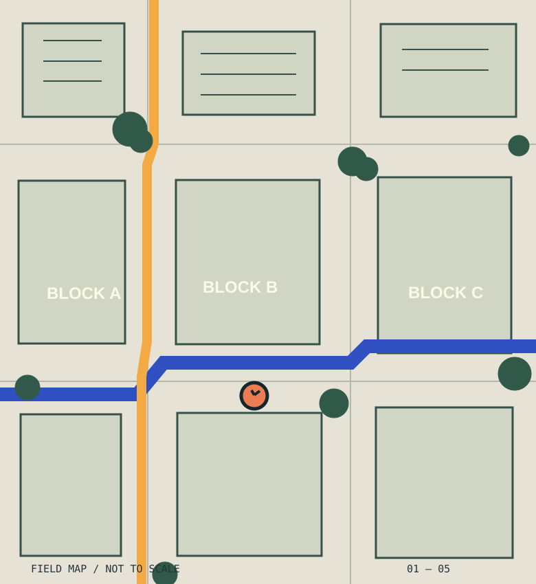

01 / OBSERVATION2 MIN READ
The art of noticing a street
A practical invitation to see the details that make a familiar route feel different.
Short, curious field notes about the spaces we move through without thinking—from a quiet corner to a bench at the edge of a busy street.
Explore the journal
A city is not just what gets built. It is what gets noticed.
A practical invitation to see the details that make a familiar route feel different.
What a place to sit says about rest, belonging, and the pace of a city.
Not a guide to the best places. A reason to pay more attention to the places already around us.
How Margin Atlas works